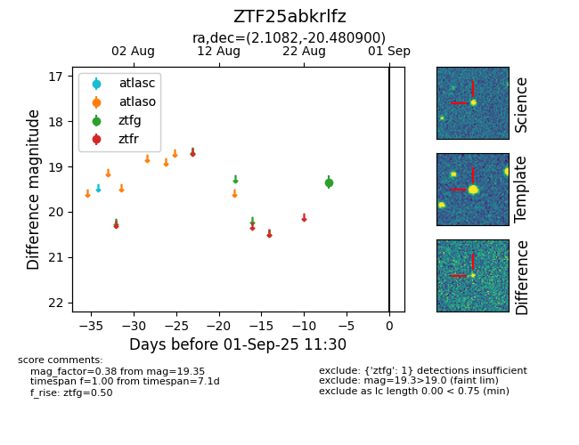

FINK: ZTF25abkrlfz
Lasair: ZTF25abkrlfz
ALeRCE: ZTF25abkrlfz
ZTF25abkrlfz (ztf,fink)
equatorial (ra, dec) = (2.1082,-20.48090)
galactic (l, b) = (64.7101,-78.13713)

last ztfg=19.35
1 ztfg detections